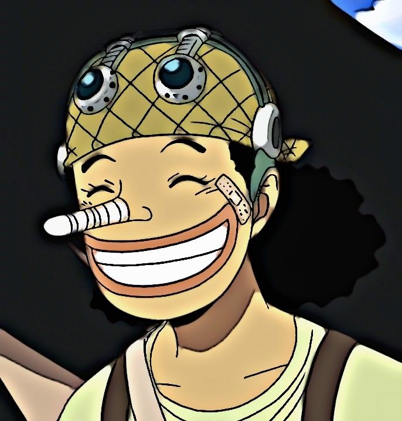

"Eu vou ser o Rei dos Piratas!!!" ― Luffy, Chapéu de Palha―
Embarque em uma viagem emocionante pelo cativante mundo de
Uma pedaço. Descubra histórias incríveis, personagens icônicos e
aventuras inspiradoras que conquistaram os corações de
milhões.
Afinal, o que é One Piece...
"Você quer meu tesouro? Tudo bem, você pode ficar com ele. Procure! Eu saí
tudo o que o mundo tem a oferecer lá!" ―Gol' D Roger, Rei dos Piratas
A história de One Piece
Junte-se a Monkey D. Luffy e sua tripulação, os Piratas do Chapéu de Palha.
enquanto eles enfrentam águas enfrentam inimigos e descobrem o
mistérios da Grand Line. Prepare-se para
confrontos emocionantes, reuniões sinceras e mente
revelações da trama.
Principais personagens
Monkey D. Luffy
Luffy do Chapéu de Palha", como ficou conhecido,
é o protagonista do anime, e o fundador e capitão
da tripulação Piratas do Chapéu de Palha. Desde
muito jovem, tem como seu maior sonho um dia
encontrar o lendário tesouro de Gol D. Roger, para
se tornar o novo Rei dos Piratas.
Roronoa Zoro
Primeiro pirata (segundo membro se contarmos
com Luffy) a se juntar à tripulação de Piratas
do Chapéu de Palha, Zoro aceitou o convite de
Luffy após o capitão salvar sua vida.
Nami
Uma órfã de guerra, ainda criança Nami foi adotada por
Bell-mère, uma mulher da Marinha. Enquanto crescia ao
lado de sua irmã adotiva Nojiko, Nami já demonstrava
sua paixão por desenhar mapas, sonhando em um dia fazer
o mapa de todo o mundo..
-

Usopp
é um membro da tripulação dos Chapéus de Palha
em "One Piece". Ele é conhecido como o atirador de
elite do grupo. Usopp é um contador de histórias
habilidoso e, inicialmente, é retratado como um mentiroso
compulsivo.
Sanji
Sanji é o cozinheiro da tripulação dos Chapéus de Palha
em "One Piece". Ele é conhecido por suas habilidades
culinárias excepcionais, usando suas pernas como
arma em combate, graças ao estilo de luta chamado "Black Leg Style"